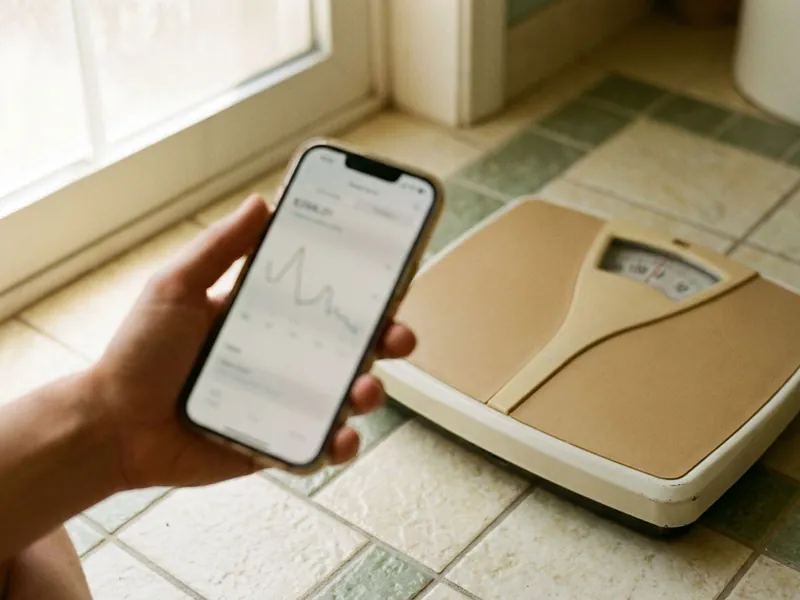

GLP-1 Microdosing in DeKalb, IL
Low-dose GLP-1 plans reviewed by a licensed provider online in DeKalb, IL. You get an honest answer on whether microdosing fits your health.
- Online intake, no office visit
- Licensed providers in your state
- Licensed US pharmacy shipping
- Frequent low-dose check-ins

- Licensed Illinois Medical Providers
- Personalized Treatment Plans
- Discreet Home Delivery
- Ongoing Medical Support
Low-Dose GLP-1 Plans With a Licensed Provider in DeKalb, IL
Rockford Weight Loss is where DeKalb adults go when social media claims about microdosing need a reality check. You fill out the intake once, and the provider walks you through what is known and what is still guesswork.
What the program includes:
- Provider review of goals, BMI and past GLP-1 tolerance
- Small-step dosing plan with frequent check-ins
- Plain explanation of compounded versus brand-name options

Ask a licensed provider about GLP-1 microdosing in DeKalb, IL.
Take the short online questionnaire to see whether a low-dose plan or a standard plan makes more sense.
Related GLP-1 Weight Loss Options in DeKalb, IL
Every GLP-1 option Rockford Weight Loss offers in DeKalb, IL, from weekly injections to daily dissolving tablets, is reviewed by a licensed provider before anything ships.


helped
Why patients choose us for GLP-1 Microdosing in DeKalb, IL
Microdosing has thin evidence, so honesty matters more than usual. The big studies behind Wegovy and Zepbound used full doses, and low-dose plans have not been studied at that scale.
- Honest evidence, Your provider explains what is known about low doses and what is not.
- Careful steps, Dose changes are small and made only after a check-in.
- Licensed sourcing, Prescribed medication ships from a licensed US pharmacy.
Anywhere in DeKalb
Adults anywhere in DeKalb and the surrounding area can complete the intake on a phone or laptop. If prescribed, the medication ships from a licensed pharmacy to your door with dosing instructions.
Licensed care team
Licensed providers on the Oakwell MD medical team read each intake from start to finish. If something is unclear they message you, and they write a prescription only when it fits.
Safety first
A low dose does not change the contraindications, and the same red flags apply. Medullary thyroid cancer or MEN 2 in your family rules out GLP-1 medicine at any dose, and pancreatitis or gastroparesis gets careful review.
The care standards behind every DeKalb plan
Rockford Weight Loss runs on the Oakwell MD clinical model: licensed providers, US pharmacies that meet state and federal compounding rules, and follow-up that does not stop when the package arrives. Every treatment on this site goes through the same screening throughout DeKalb, IL.
How GLP-1 Microdosing Works in DeKalb, IL
How GLP-1 Microdosing Works in DeKalb
Microdosing is a dosing strategy, not a separate drug. It means taking semaglutide or tirzepatide at doses lower than the standard labeled schedule, or increasing the dose more slowly, while the medicine still works on the same gut hormone receptors. Some people notice quieter food noise. Because brand pens come in fixed doses, low-dose plans often use compounded medication, which is not FDA-approved.

Who GLP-1 Microdosing Is For
Three groups ask about it most. People who could not tolerate standard GLP-1 doses because of nausea, people who want a slower start and people maintaining weight loss after a full course are the usual candidates. It is not a shortcut. Anti-aging and anti-inflammation claims lack solid research behind them.
Low-Dose Schedule in DeKalb
There is no single standard schedule. Providers often start below the usual first dose, such as a fraction of the 0.25 mg semaglutide or 2.5 mg tirzepatide starting dose, and increase in smaller steps than the label calls for. Most plans stay weekly. Any change should go through your provider first.
What to Expect Week by Week
Early weeks vary a lot between people. At low doses, one person may feel full sooner by week two while another feels no difference until the dose is nudged up. Side effects still happen. Expect modest, gradual change.
Side Effects in DeKalb
Lower doses reduce side effects but do not erase them. The same stomach symptoms appear at low doses, including nausea, reflux, constipation and diarrhea, mostly after each small step up. Serious risks still apply. Pancreatitis, gallbladder problems and the thyroid C-cell tumor warning from rodent studies apply at any dose.
Eligibility and Screening
Screening is the same as for full doses. The review covers BMI, weight history, diagnoses, medications and earlier GLP-1 use, with questions about the dose you reached and what made you stop. MEN 2 is a hard stop. Past pancreatitis or an eating disorder needs a longer conversation.
Microdosing Compared With Standard GLP-1 Treatment in DeKalb
Standard dosing has the trial data. The STEP and SURMOUNT trials tested full doses and reported average losses near 15 to 20 percent, and nothing comparable exists for low-dose plans. Effects are likely more modest. Some people use a low dose for maintenance after reaching a goal.

How the Online Microdosing Process Works in DeKalb
A ten-minute questionnaire comes first. You answer questions on your weight history, current medicines, goals and earlier GLP-1 use, with detail on any side effects. Follow-up questions are common. If prescribed, medication ships from a licensed pharmacy with a clear dosing chart.
GLP-1 Microdosing Near Me in DeKalb, IL
Searching for GLP-1 microdosing near me often turns up med spas offering weekly in-office shots across DeKalb. Weekly visits are optional. An online visit gives you a licensed provider review, a written low-dose plan and check-ins by secure message, with the medication shipped to your door so you can measure and inject at home.
Specifics help your provider plan the dose. Have your height and weight ready, along with any past GLP-1 use and the highest dose you tolerated, recent labs if you have them and a full list of medications. Old pharmacy labels help.
Low-dose plans change in small steps, which means frequent check-ins. With an online clinic, your provider handles every small adjustment by message, and refills arrive at your home before you run out. Simple and specific.
Is GLP-1 Microdosing right for you?
Five quick questions, then a licensed provider reviews your answers. No commitment.
Rockford Weight Loss at a glance
- Licensed providers serving DeKalb, IL and nearby
- Online visits, no office wait
- Discreet delivery to your door
- 4.8-star rated by 904+ Rockford-area patients
DeKalb patients
- Population
- 40,211
- Visits
- Online, from anywhere in DeKalb
- Delivery
- DeKalb and communities nearby
- Nearby
- Huntley, Belvidere, Rockford, Woodstock
Patients in DeKalb, IL choose an online clinic for GLP-1 microdosing because a licensed provider explains the evidence honestly and manages each small dose step by message.
DeKalb map
Everything we treat in DeKalb, IL
Weight loss is where most patients start. The same provider-reviewed, shipped-to-you model covers peptides, sexual health, hair, sleep and longevity.


How to Get Started With GLP-1 Microdosing in DeKalb, IL
A ten-minute questionnaire starts it, and a licensed provider decides whether a low dose fits.
Answer a Few Questions
Complete a short online questionnaire about your health, goals and past GLP-1 use. Most people finish in about ten minutes.
Provider Reviews Your Goals
A licensed provider reviews your answers and may ask follow-up questions. They decide whether a low-dose plan, a standard plan or another option is appropriate.
Low-Dose Plan and Check-ins
If prescribed, medication ships from a licensed pharmacy with a dosing chart. Frequent check-ins guide each small adjustment.
Frequently Asked Questions About GLP-1 Microdosing in DeKalb
Maybe, depending on your history. Microdosing can fit people who had side effects on full doses, prefer a gentler start or want help maintaining a loss, though it does not replace medical eligibility. Your provider confirms after reading your answers.
No. Microdosing is an off-label approach, and the compounded semaglutide or tirzepatide often used for it is not FDA-approved, while brand-name Wegovy and Zepbound are approved only at their labeled dosing schedules. Your provider explains what that means.
Rarely. Off-label low-dose plans with compounded medicine are almost never covered, even by plans that pay for Wegovy or Zepbound at labeled doses. Expect to pay out of pocket.
Usually not. Brand-name pens like Wegovy and Zepbound deliver fixed doses and are not meant to be split or partially dialed, so low-dose plans below the starting strength typically rely on compounded vials. Do not try to divide doses.
You get a reason and an alternative. Your provider may recommend a standard GLP-1 schedule, an oral medicine or a nutrition and activity plan with check-ins, depending on what in your history made microdosing a poor fit. Sometimes in-person care is safer.
Pricing is shown after the provider review. It depends on which medicine your provider recommends, the dose, whether it is compounded or brand-name and how often your plan needs refills. You see the full cost before agreeing.
Some providers use it that way. After reaching a goal on a full dose, a lower maintenance dose may help some people keep appetite in check, though research on the best maintenance dose is still limited. Maintenance plans are individual.
Usually milder, not absent. Stomach symptoms still happen, especially after small increases, and the serious risks of GLP-1 medicine, such as pancreatitis, do not disappear at low doses. Report severe belly pain right away.
What patients say about Rockford Weight Loss
Emily R.
I had tried everything short of surgery. The questionnaire took five minutes, a real provider messaged me the next morning, and the step-up schedule kept the nausea manageable. Four months in and I feel like myself again.
Semaglutide Injections · Huntley, ILMarcus T.
What sold me was that they did not just mail a kit. My provider adjusted my dose twice based on how I was feeling and actually answered my messages. Down more than I expected and my blood pressure is finally normal.
Tirzepatide Injections · Woodstock, ILAngela W.
One tablet a day instead of three products. Six months in the thinning at my part has filled in noticeably and the check-ins kept me consistent.
Hair Growth · Belvidere, ILJordan M.
No awkward waiting room, no pharmacy counter. The chewable they recommended works and the package looked like anything else on the porch.
ED Treatment · Huntley, ILLaura S.
Honest from the start. The provider told me which option fit my history and why, and when I hit a plateau they changed the plan instead of just raising the dose. Felt like real medicine, not a subscription.
GLP-1 Weight Loss · Woodstock, ILDaniel K.
Came for recovery after a shoulder injury, stayed for how thorough the screening was. They asked for labs, explained what BPC-157 can and cannot do, and never oversold it.
Peptide Therapy · Huntley, ILReviews reflect individual experiences. Results vary and treatment is prescribed only when clinically appropriate.
Areas We Serve Near DeKalb, IL
Important safety information. GLP-1 medications (semaglutide, tirzepatide) are not for everyone. Do not use them if you or a family member have had medullary thyroid carcinoma or Multiple Endocrine Neoplasia syndrome type 2, if you are pregnant or breastfeeding, or if you have a history of pancreatitis without discussing it with your provider. Common side effects include nausea, constipation, diarrhea and reduced appetite. Compounded medications are prepared by licensed pharmacies and are not FDA-approved. A licensed provider decides whether any treatment is appropriate for you.